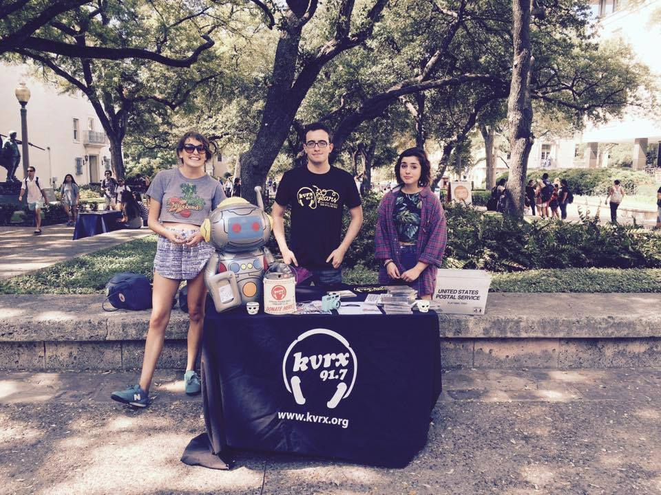
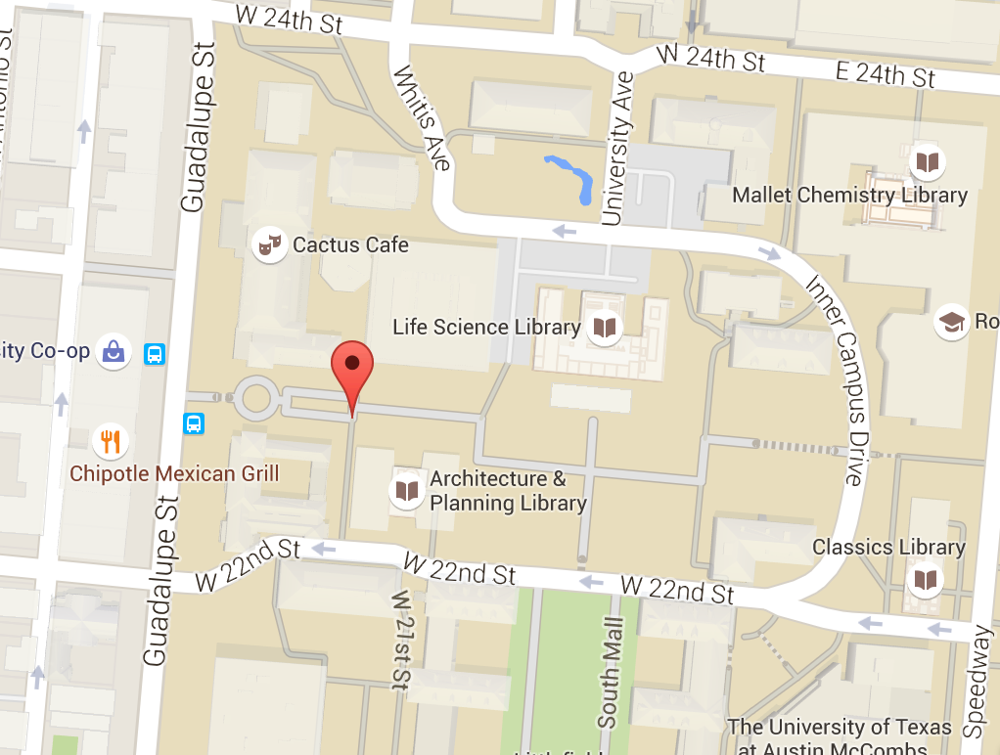
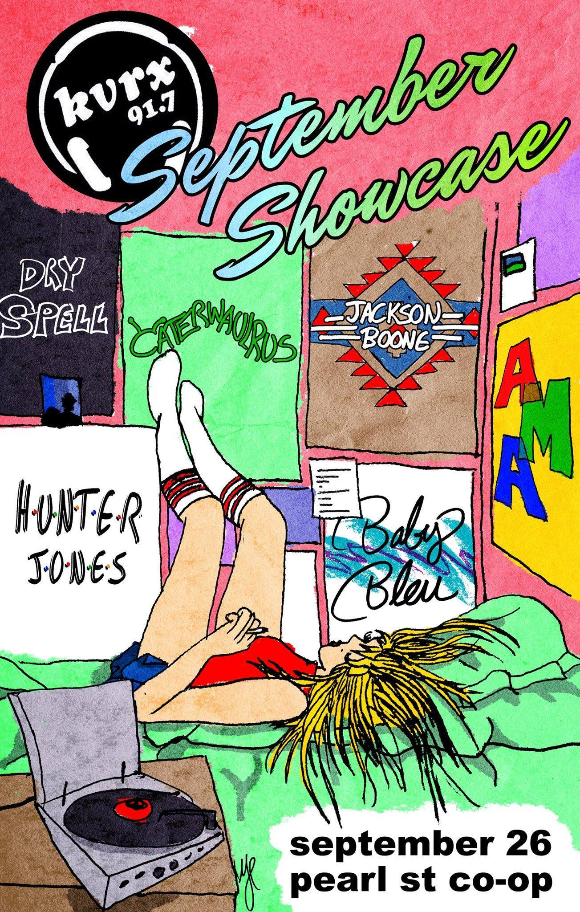
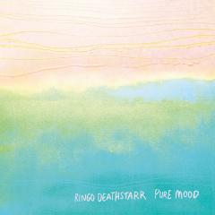

Student Radio from the University of Texas at Austin

Join KVRX
Are you interested in hosting your own weekly music or talk show? Do you love discovering new bands and topics?
Come see us on the West Mall every Friday at 1 p.m. and sign up for new DJ training.
Events
Blogs
Review: Ringo Deathstarr - Pure Mood
Probably one of the most universally loved KVRX-core groups has done it again. Ringo Deathstarr know exactly what they're doing when they make tracks...
READ MORE

Free audience tapings of Local Live are held in the Hearst Student Media Building (HSM) (2500 Whitis Ave).

Booking inquiries may be sent to production@kvrx.org.
Archives
Connect with former KVRX and KTSB staff on Facebook
The most popular songs on KVRX this week.